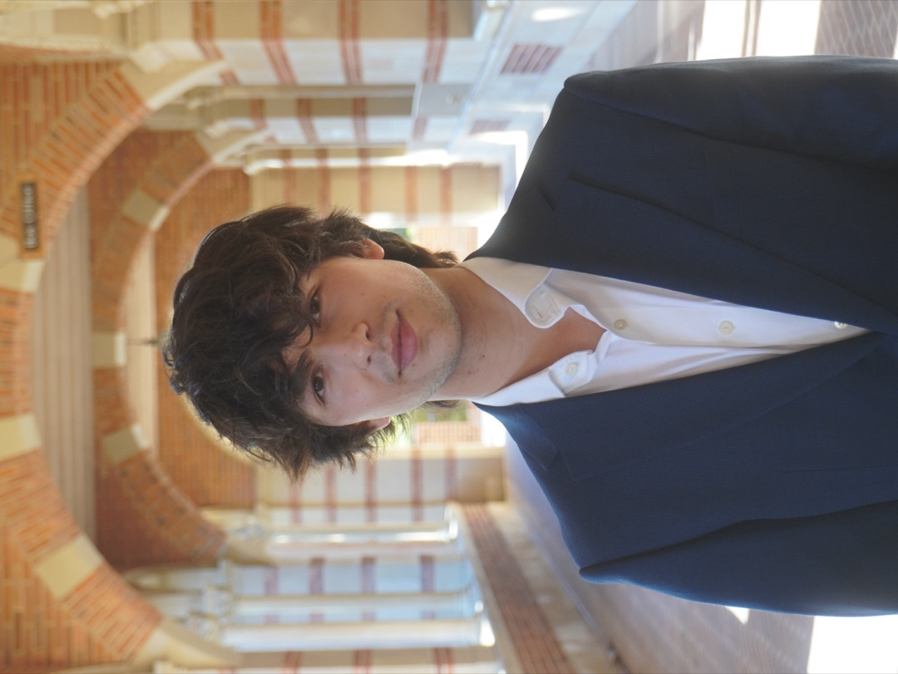
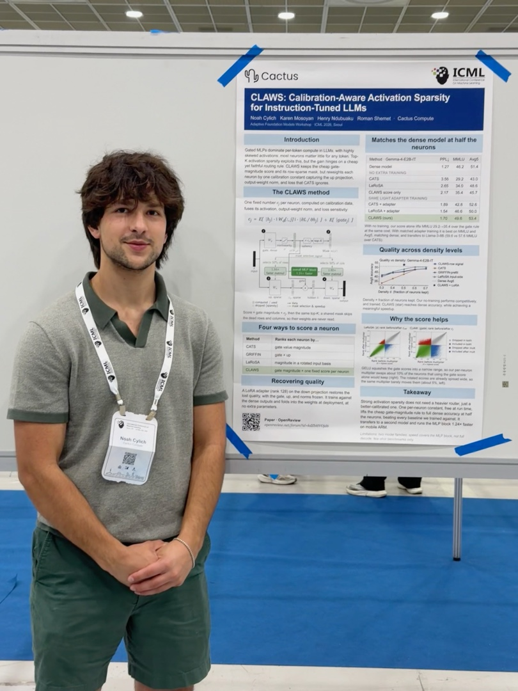

I make large models run in less memory than they should need.
CS at UCLA, finishing this December. Most of what I do comes back to one observation, that only a fraction of a transformer matters for any given token, and you can spend that fact on speed or on memory. I have spent two years spending it.

Ordered by when I joined. Open any of them for what I actually did there.
An open source inference engine for phones, wearables, and anything else without a datacenter behind it. Third largest contributor across 53 merged pull requests. Almost everything I know about inference I learned here, mostly by being wrong first.
Two summers, two teams that had almost nothing to do with each other.
Professor Peng's lab. Her NLP course gave me the historical grounding I had been working without. I knew transformers and had no idea how the field arrived at them, and those older techniques still turn up in the analysis I do now.
UCLA's AI club. I ran the technical side for two years, which mostly meant finding real clients for students who had never had one.
Mentored by Brandon Harris under Dr. Vladimir Yarov-Yarovoy. My first exposure to the idea that a model could tell you something true about the physical world.
The things I built or won or practised before any of it was a career, which is most of the reason there is a career.